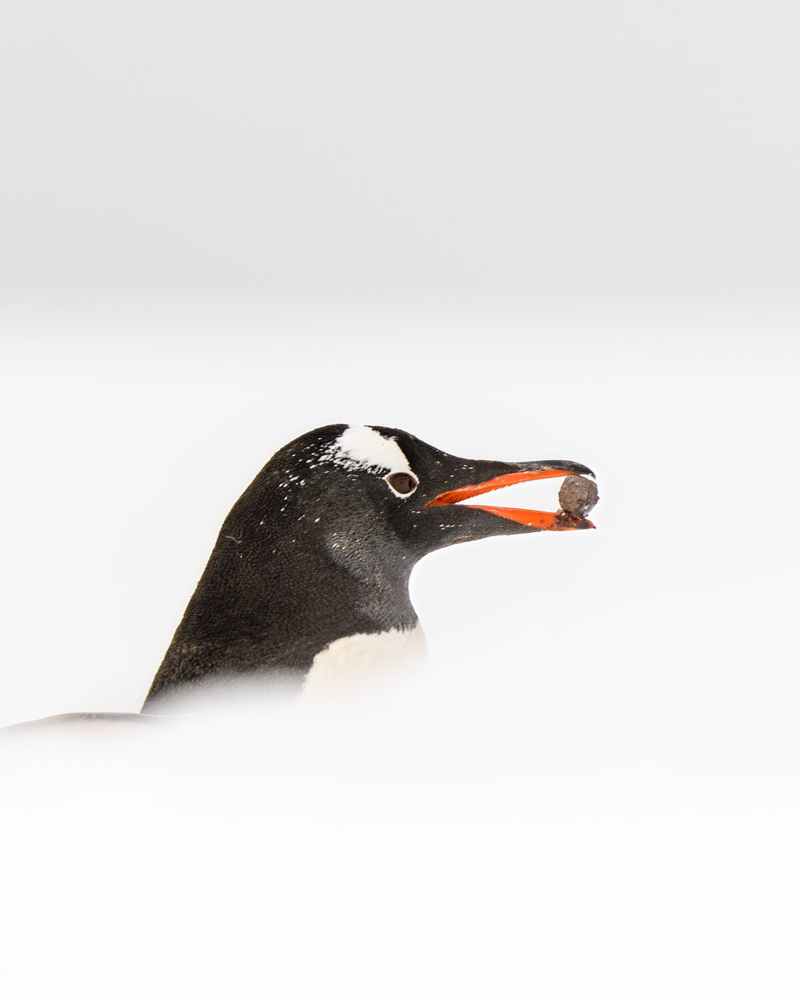

01 / Profile
Daniel
Mayer.
Cybersecurity Executive · CISO · Adviser · Investor
Photographer
02 / Who I am
I’m a cybersecurity executive and CISO who leads through trust and partnership. I believe security works best when it enables the business, and much of my work is translating risk into clear terms that leaders can act on. Drawn to innovative, forward-thinking companies and the people building them, I also advise and invest in early-stage security startups, where I most enjoy helping founders find their strategic direction. What energizes me is building strong teams and helping organizations adopt new technologies like AI responsibly, without slowing down.
Outside of work, I’m a dedicated photographer — a practice that shapes how I see: patient and observant, more inclined to watch and listen than to rush, and drawn to light, detail, and perspective.
03 / Beyond the screen
Exploring the world through a lens
Photography is how I explore my creative side and step away from screens and cybersecurity. I love to travel, and the camera is the perfect companion — pulling me toward wildlife, landscapes, architecture, and the character of new places.
